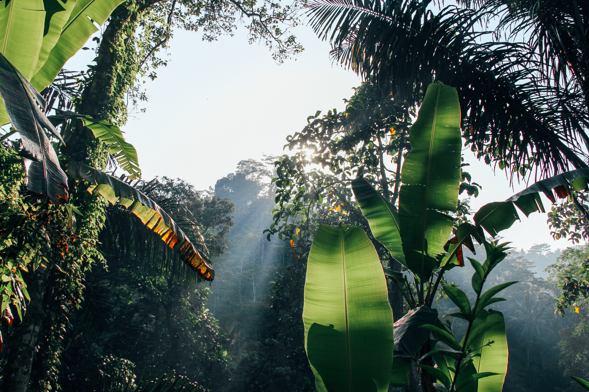
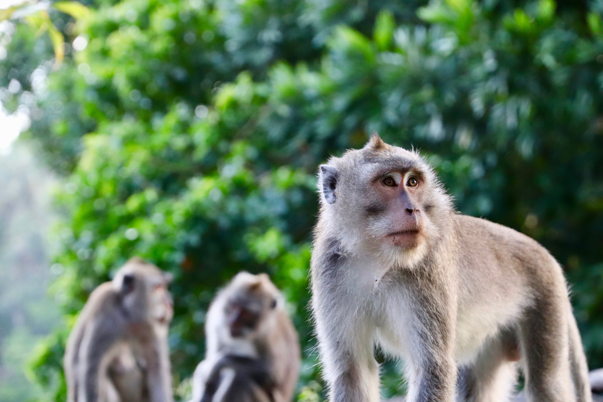
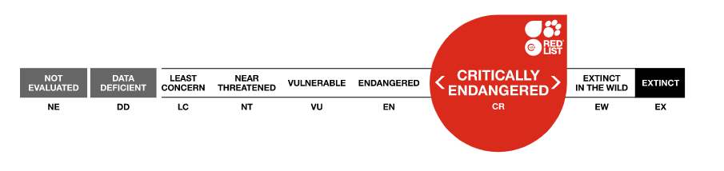
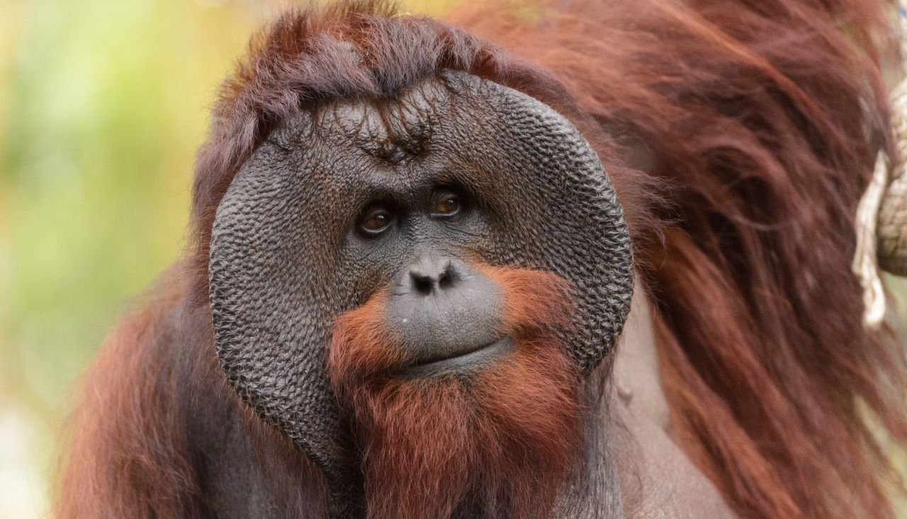
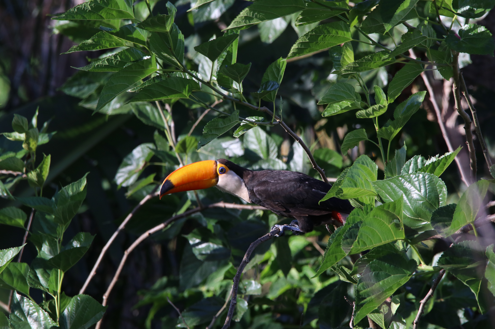
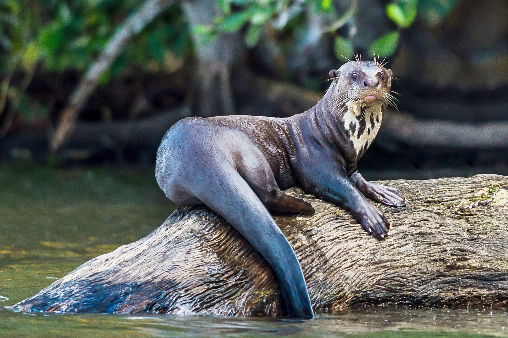

Our Forests Are Changing
And it is our fault.
For your optimal viewing experience, use Chrome to explore this narrative. If you find that the charts are cut off on your screen, try zooming your window out.
There were 6 billion hectares of forest, covering 57% of the habitable land on Earth.
Let’s put this into perspective…
1 billion hectares is equivalent to the size of the U.S.
. . .
5.1 billion hectares of forest remained, covering 48% of habitable land.
. . .
Today, the forest covers 38% of habitable land—a loss of over 1 billion hectares in a century.
This leaves us with 4 billion hectares.
. . .
Keep scrolling for more!
For your optimal viewing experience, use Chrome to explore this narrative. If you find that the charts are cut off on your screen, try zooming your window out.
With the rapid industrialization and development of agricultural technology of the past century and a half, countries have increasingly converted their forests for agricultural land use and urbanization. The tens of thousands of wildfires that occur every year also contribute to almost one-quarter of global forest loss, resulting in the loss of biodiversity and increased CO2 emissions.
However, not all forest loss is equal. While wildfires result in massive forest loss, the victim forests will eventually regrow over many years. In contrast, completely removing primary rainforest to produce crops or build towns will permanently change its ecosystem—these trees will not regrow. The latter is what we call deforestation.
95% of deforestation occurs in the tropics, and beef, soil, and palm oil production are responsible for 60% of this damage. It is no surprise that palm oil and soy account for 18% of this due to their many uses—from use in food products to feed for livestock and biofuels.
And as for beef, 2.1 million hectares every year are set aside for pasture land to raise cattle—that’s about half the size of the Netherlands!
Urbanization, on the other hand, accounts for only 0.6% of deforestation. Simply put, the products and food we choose to buy have a greater impact on global land use than expanding cities.
Another major cause of forest loss is wildfires, both natural and deliberately started for maintenance or site preparation purposes. While forests burned in wildfires are destroyed, this damage is temporary and they will ultimately regrow if the land is not converted and left alone.
However, despite this lower relative impact on long term forests, wildfires cause massive disruption to natural habitats and have resulted in the loss of biodiversity. Some species that have been impacted by wildfires and forest loss in general include the orangutan and the jaguar.
Every second that passes, we lose more and more of our forests. As you read this sentence, a football field of forest was just lost. With deforestation also comes other consequences, including the loss of the many plants and animals that live in our forests and increased greenhouse gas emissions that contribute to global warming.
Continued deforestation will have disastrous consequences worldwide. Rainforests are essential to medicine, regulation of Earth’s cycles, and are home to countless species that will continue to become endangered or extinct at accelerated rates. The deforestation of forests everywhere will continue to cause irreversible harm to our planet unless we make a change.

Beyond just producing oxygen, forests also act as carbon sinks and lowering the CO2 in the atmosphere. When deforestation occurs, there are less trees available to capture CO2, in turn increasing the global atmospheric levels of CO2.
Hover over a country to see the annual deforestation or afforestation in hectares.
Indonesia has seen a rapid increase in palm oil production since the 1960s, which involves the conversion of forested land to plantations. This has directly impacted their rate of deforestation.

In addition to fueling conflict over land rights and increasing pollution, IUCN estimates that deforestation in Indonesia and Malaysia threatens nearly 200 animal species. Among these is the orangutan. An average of 50 orangutans per week die due to lost habitat.


The Bornean Orangutan can be found on the islands of Borneo and Sumatra, and is considered a critically endangered species. Over the past 60 years, their population has decreased by over 50%. Additionally, the rainforests they can be found in have been reduced by at least 55% in just the span of 20 years.

Over the past 60 years, 35 million hectares of forested land, mostly in the Amazon rainforest, have been cleared for soybean production in Brazil. Most of this growth has come from the increased demand for processed soy used in animal feed, biofuels and vegetable oil. Though the largest driver of deforestation in the Brazilian Amazon has been shown to be the expansion of pasture land for beef production, soy is likely to have played at least some role in the loss of forest.

The Amazon Rainforest is one of the most diverse ecosystems in the world, home to a third of the world’s species. The Amazon regulates our ecosystem, the plants are essential to modern medicine, and it plays a key role in the Earth’s oxygen and carbon cycles. The rate of species extinction is accelerating and we will lose our biodiversity if we continue down this path of destruction.


Afforestation is when trees are planted in an area with no previous tree cover, and it is one of the ways we are fighting against deforestation. Additionally, forests are also being restored through natural succession on land and reforestation. These are all promising AND necessary efforts to reverse deforestation and its effects, but what can we do as individuals?
Above are the top fifteen countries that have contributed to the reforestation of our forests, with reforested land area summing 1990 - 2015.

https://www.wwf.org.uk/learn/effects-of/deforestation
https://www.theworldcounts.com/challenges/planet-earth/forests-and-deserts/rate-of-deforestation/story
https://www.un.org/sustainabledevelopment/blog/2019/05/nature-decline-unprecedented-report/
https://www.greenpeace.org/usa/biodiversity-and-the-amazon-rainforest/
https://www.climatecouncil.org.au/deforestation/
https://www.worldwildlife.org/species/sumatran-orangutan
https://www.worldwildlife.org/species/bornean-orangutan
https://ourworldindata.org/forests-and-deforestation
IUCN Forest Species Data
https://unsplash.com/photos/ugnrXk1129g
https://www.wwf.org.uk/learn/effects-of/deforestation
https://unsplash.com/photos/9MuF4kclRyg
https://unsplash.com/photos/rz7A9NYll4g
https://unsplash.com/photos/sNeW-Aoeyus
https://unsplash.com/photos/8xJF9D1bwb4
https://unsplash.com/photos/5s_n82D4yAo
https://www.iucn.org/sites/dev/files/styles/graphics/public/en.png
https://www.biolib.cz/en/image/id385288/
https://www.theanimalfacts.com/mammals/orangutan/
https://unsplash.com/photos/x8ZStukS2PM
https://unsplash.com/photos/axE5o1Xh7_Q
Dallas Warren
Jacqueline Dai
Ryan Francis
Sara Aalinezhad
Victoria Teng